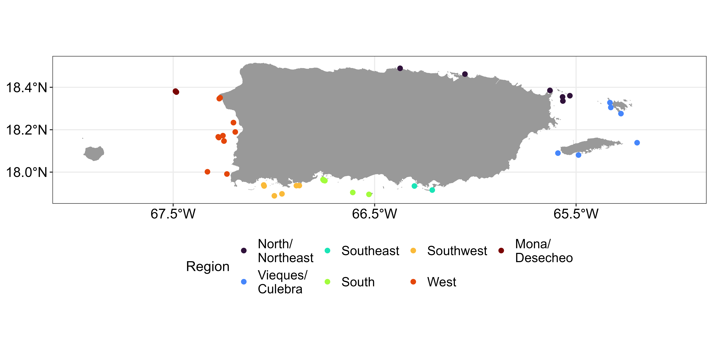
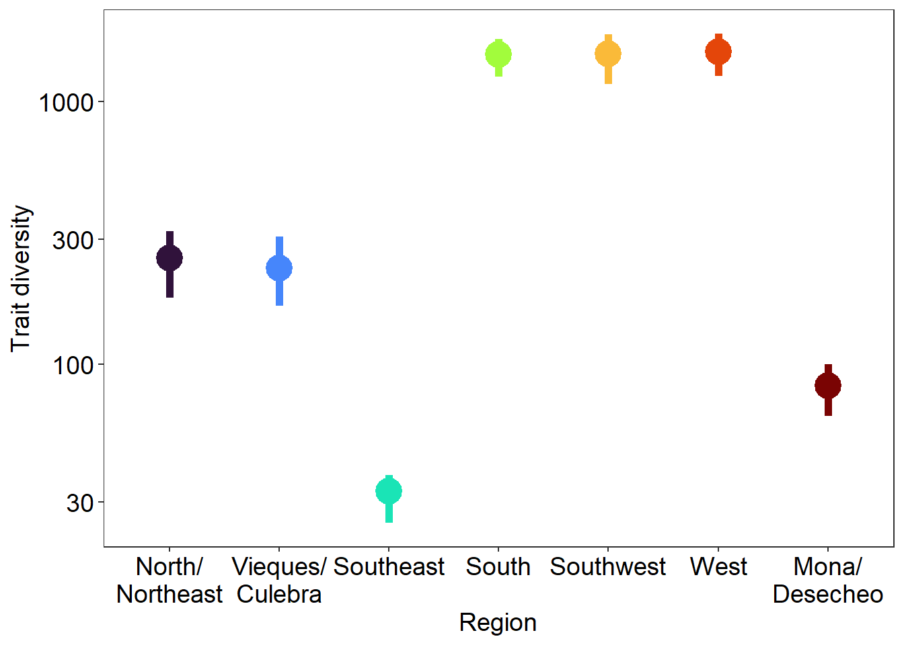

# load libraries
library(tidyverse)
## ── Attaching core tidyverse packages ──────────────────────── tidyverse 2.0.0 ──
## ✔ dplyr 1.1.4 ✔ readr 2.1.5
## ✔ forcats 1.0.0 ✔ stringr 1.5.1
## ✔ ggplot2 3.5.1 ✔ tibble 3.2.1
## ✔ lubridate 1.9.3 ✔ tidyr 1.3.1
## ✔ purrr 1.0.2
## ── Conflicts ────────────────────────────────────────── tidyverse_conflicts() ──
## ✖ dplyr::filter() masks stats::filter()
## ✖ dplyr::lag() masks stats::lag()
## ℹ Use the conflicted package (<http://conflicted.r-lib.org/>) to force all conflicts to become errors
library(hypervolume)
## Loading required package: Rcpp
library(truncnorm)
# load trait data
df_tr = read_csv('data/coral_traits.csv')
## Rows: 13 Columns: 6
## ── Column specification ────────────────────────────────────────────────────────
## Delimiter: ","
## chr (1): species
## dbl (5): corallite diameter, growth rate, skeletal density, symbiodinium den...
##
## ℹ Use `spec()` to retrieve the full column specification for this data.
## ℹ Specify the column types or set `show_col_types = FALSE` to quiet this message.
df_tr
## # A tibble: 13 × 6
## species `corallite diameter` `growth rate` `skeletal density`
## <chr> <dbl> <dbl> <dbl>
## 1 Acropora cervicornis 1.2 111. 1.51
## 2 Acropora palmata 0.65 71.0 1.84
## 3 Agaricia spp. 2.54 1.42 2.16
## 4 Colpophyllia natans 22.5 5.56 0.764
## 5 Diploria labyrinthifor… 7 3.99 1.48
## 6 Montastraea cavernosa 6.06 4.51 1.70
## 7 Orbicella annularis 2.45 7.31 1.73
## 8 Orbicella faveolata 2.38 8.59 1.18
## 9 Orbicella franksi 3.08 5.22 2.12
## 10 Porites astreoides 1.39 3.64 1.54
## 11 Porites furcata 1.7 29.6 1.05
## 12 Pseudodiploria spp. 5.87 4.36 1.45
## 13 Siderastrea spp. 3.56 5.32 1.64
## # ℹ 2 more variables: `symbiodinium density` <dbl>,
## # `colony maximum diameter` <dbl>
# load benthic community percent cover data across regions
# pc = percent cover 0-100
# pc_sd = standard deviation in percent cover
df_ben = read_csv('data/coral_PC.csv')
## Rows: 52 Columns: 4
## ── Column specification ────────────────────────────────────────────────────────
## Delimiter: ","
## chr (2): species, region
## dbl (2): pc, pc_sd
##
## ℹ Use `spec()` to retrieve the full column specification for this data.
## ℹ Specify the column types or set `show_col_types = FALSE` to quiet this message.
df_ben
## # A tibble: 52 × 4
## species region pc pc_sd
## <chr> <chr> <dbl> <dbl>
## 1 Acropora cervicornis North/Northeast 0.0617 0.237
## 2 Acropora cervicornis South 0.0536 0.268
## 3 Acropora cervicornis Southwest 0.16 0.505
## 4 Acropora cervicornis West 0.0647 0.541
## 5 Acropora palmata Southwest 3.94 10.1
## 6 Acropora palmata West 5.04 13.9
## 7 Colpophyllia natans Mona/Desecheo 0.653 1.55
## 8 Colpophyllia natans South 0.467 1.39
## 9 Colpophyllia natans Southwest 0.317 1.05
## 10 Colpophyllia natans Vieques/Culebra 0.0757 0.296
## # ℹ 42 more rowsExample 2: Trait diversity of coral communities
Trait diversity of coral communities in Puerto Rico
This vignette uses hypervolumes to understand the spatial variation in trait diversity of coral reef communities. Hypervolumes are generated using species trait data and weighted based on random percent cover of species from mean and sd across all sites within a region. This process is repeated 100 times. Hypervolume size is used to quantify the trait diversity of each community.
data
The data used for this example comes from the NOAA which monitors coral benthic communities throughout Puerto Rico. The benthic cover data consists of percent cover (pc = mean percent cover, sd = standard deviation percent cover) from coral species collected across 8 regions. Data is averaged across sites within each region. The coral trait data is based on average values of each trait for each species from published literature values.

Prep data
To generate hypervolumes a random percent cover for each species is generated based on the mean and sd of percent cover of that species across all sites in the region. This process is repeated 100 times.
reps = 100
set.seed(14)
df = df_ben |>
# join trait data to benthic data
left_join(df_tr, by = 'species') |>
# duplicate the data to create the number of reps needed
slice(rep(1:n(), each=reps))|>
# randomly generate percent cover
mutate(i = rep(1:reps, times=nrow(df_ben)),
percentcover = truncnorm::rtruncnorm(1, a = 0.001, b = 100,
mean = pc, sd = pc_sd)) |>
select(region, `corallite diameter`:`percentcover`)
df
## # A tibble: 5,200 × 8
## region `corallite diameter` `growth rate` `skeletal density`
## <chr> <dbl> <dbl> <dbl>
## 1 North/Northeast 1.2 111. 1.51
## 2 North/Northeast 1.2 111. 1.51
## 3 North/Northeast 1.2 111. 1.51
## 4 North/Northeast 1.2 111. 1.51
## 5 North/Northeast 1.2 111. 1.51
## 6 North/Northeast 1.2 111. 1.51
## 7 North/Northeast 1.2 111. 1.51
## 8 North/Northeast 1.2 111. 1.51
## 9 North/Northeast 1.2 111. 1.51
## 10 North/Northeast 1.2 111. 1.51
## # ℹ 5,190 more rows
## # ℹ 4 more variables: `symbiodinium density` <dbl>,
## # `colony maximum diameter` <dbl>, i <int>, percentcover <dbl>Hypervolumes
Values are z-scored across all sites and species for each replication separately. Here we nest two columns one with all of the input data for the hypervolume (data) and one with a vector of the randomly generated percent cover that will be used to weight the hypervolume (weight). Hypervolume size is extracted from each hypervolume using map_dbl() and get_size().
# z-score across all regions for each rep and generate hypervolumes
df = df |>
# z-score across regions for each rep
group_by(i) |>
mutate(across(`corallite diameter`:`colony maximum diameter`, scale)) |>
# nest data for each region and rep to make hypervolume
group_by(region, i) |>
# create a column for the percent cover to weight hypervolume as well as input data
nest(weight = percentcover, data = `corallite diameter`:`colony maximum diameter`) |>
# create community weighted hypervolumes
mutate(hv = map2(data,weight, \(data,weight) hypervolume_gaussian(data,
name = paste(region,i,sep = '_'),
weight = weight$percentcover,
samples.per.point = 1000,
kde.bandwidth = estimate_bandwidth(data),
sd.count = 3,
quantile.requested = 0.95,
quantile.requested.type = "probability",
chunk.size = 1000,
verbose = F)),
# extrace size for each hypervolume
hv_size = map_dbl(hv, \(hv) get_volume(hv)))** Do not try to view df in rstudio it will freeze your r since it is too big
head(df)
## # A tibble: 6 × 6
## # Groups: region, i [6]
## region i weight data hv hv_size
## <chr> <int> <list> <list> <list> <dbl>
## 1 North/Northeast 1 <tibble [8 × 1]> <tibble [8 × 5]> <Hypervlm> 164.
## 2 North/Northeast 2 <tibble [8 × 1]> <tibble [8 × 5]> <Hypervlm> 258.
## 3 North/Northeast 3 <tibble [8 × 1]> <tibble [8 × 5]> <Hypervlm> 307.
## 4 North/Northeast 4 <tibble [8 × 1]> <tibble [8 × 5]> <Hypervlm> 268.
## 5 North/Northeast 5 <tibble [8 × 1]> <tibble [8 × 5]> <Hypervlm> 218.
## 6 North/Northeast 6 <tibble [8 × 1]> <tibble [8 × 5]> <Hypervlm> 218.Hypervolume size
We can calculate the mean and 95% CI of each run to determine the trait diversity of coral communities across each region.
# plot hypervolume size
d = df |>
group_by(region) |>
summarize(mean = mean(hv_size),
upper = quantile(hv_size, 0.975),
lower = quantile(hv_size, 0.025)) |>
mutate(region = factor(region,
levels = c('North/Northeast', 'Vieques/Culebra',
'Southeast', 'South', 'Southwest',
'West', 'Mona/Desecheo'),
labels = c('North/\nNortheast', 'Vieques/\nCulebra',
'Southeast', 'South', 'Southwest',
'West', 'Mona/\nDesecheo')))
ggplot(d, aes(region, mean, color = region))+
geom_pointrange(aes(ymin = lower, ymax = upper), size = 1.5, linewidth = 2)+
labs(x = 'Region', y = 'Trait diversity', color = 'Region')+
scale_y_log10()+
scale_color_viridis_d(option = 'turbo')+
theme_bw()+
theme(axis.title = element_text(size = 14),
axis.text = element_text(size = 14, colour = "gray0"),
plot.title = element_text(size = 14, hjust=0.5),
panel.grid.major = element_blank(),
panel.grid.minor = element_blank(),
legend.position = 'none',
legend.title = element_text(size = 14),
strip.text.x = element_text(size = 14),
legend.text = element_text(size = 12))